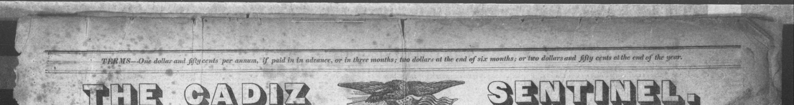

One paper. Same masthead every week. The date changes. Cadiz is spoken KAY-diz. Nothing here was rewritten.
1844 in Cadiz — walk a shop, a street, and a fight across the Thursdays.

Thursday, March 21, 1844
J. M'Gonagle, editor and printer. Forty-five stories from the type, plus skippable shop cards.
Public domain issues from Chronicling America. Player adapted from mat-nolen/tldr-radio.